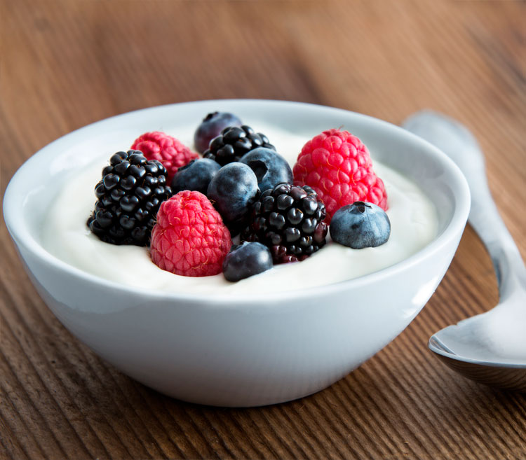

Postre
Yogurt con Frutos Rojos y Miel

Ingredientes
- 1 taza de yogur griego natural
- 1/2 taza de frutos rojos (fresas,árandanos,frambuesas)
- 1 cuucharada de miel
Pasos a Seguir
- Colocar el yogurt en un bol
- Añadir los frutos rojos por encima
- Rociar con miel
Macros
| Macronutriente |
Cantidad |
| Calorías |
150 kcal |
| Proteínas |
10 g |
| Carbohidratos |
20 g |
| Grasas |
3 g |
Volver al menú